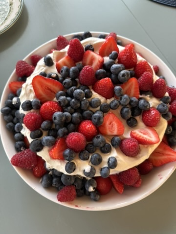

Mitä löydät sivustolta?
Tältä sivulta löydät kolme helppoa ja näyttävää reseptiä, hyödyllisiä vinkkejä ja inspiraatiota kotikokkailuun.

Löydä herkullisia reseptejä ja opi uusia ruoanlaittotaitoja.
Tältä sivulta löydät kolme helppoa ja näyttävää reseptiä, hyödyllisiä vinkkejä ja inspiraatiota kotikokkailuun.